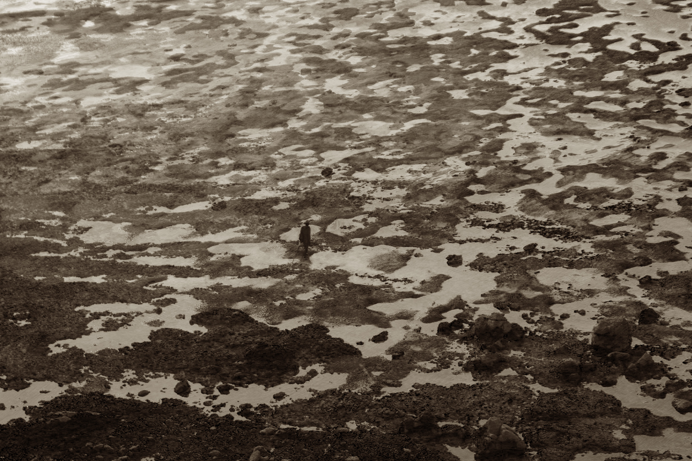
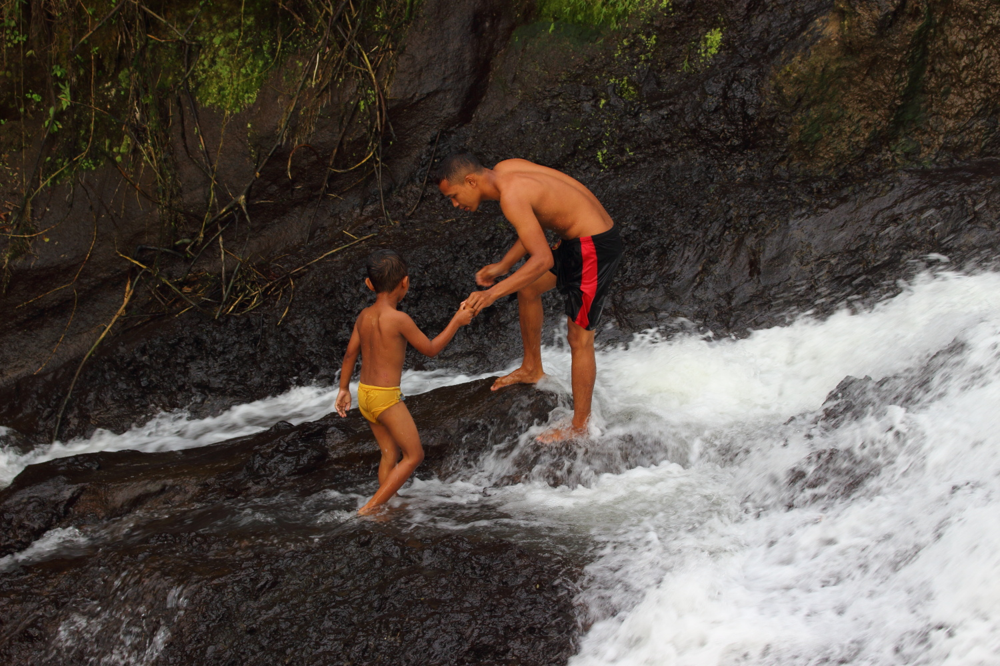

Indonesia : Lombok and Gili Islands
May 16th - 20th
On this week's episode of Love Island: Diana treads romantic water when she brings together 3 women fighting for her love.
I came, I saw, and I failed to conquer the fog of Bromo. Descending from the heights of loneliness hyper-self-awareness, I sought out warm bodies of water, and the strength, resolve, and pragmatism to live on. Naturally, I looked towards women.
Less naturally, and more due to the over-subscription of stereotypes, before fully committing to spending 5 days with multiple women, I checked into a tiny box of a house and went through the ritual of a quiet night out with the boys. Had some syrupy rice wine, checked out the outdoor 'club', played in the sand listening to basic EDM, scootered around the village 5 times without finding the house, lost the Airbnb host and hugged his dogs, and went to a civilised breakfast at the 'white people cafe' in the morning. Low-key lost some months of my life to second hand smoke.
My friend Joel is good at taking instagram photos of smashed avocado toast. Faith in men is not all lost.
Lombok : Kuta
The first Angel arrived. Liz is the golden girl with 3 degrees, portable lights and speakers, and an unworldly amount of insights into worldly banalities. Sometimes puts on pants inside-out. At least she's not a slow driver.
I know it's pretty early on, but it's no understatement to say that Liz completely fits the bill of my dream girl. She is older, sharp, witty, calls on Macbeth for her instagram name, has a cute af anime voice, and mostly important, is hot and blonde.
From our first conversation in a hot and sweaty stairwell of the Bukit Timah Campus, I was in awe. Here is a woman who, yes, will probably make me feel inadequate for the rest of my life, but also can inspire me to make something of myself. I did not hesitate to jump on the scooter with half a headlight, no back brakes, and Liz at the front.
We only nearly died twice. At least she's not a slow driver.
Semeti Beach
I flounder in the bright light, scratching inarticulately for names to call colours, and she doesn't laugh.
A wonderful thing about being with someone mature and confident, is that you can leave them alone. Liz was on a much needed holiday in the true sense of finding a comfortable spot and sliding the shades on, Kindle in one hand and coconut in the other. Me, I am a child. An independent child, who wanders off to touch rocks and take 50 photos of the same algae slab. I'm grateful to be able to trust that my anti-social behaviour is tolerated, and to have someone watching over my meticulous acts not only with disdain, but also with understanding. If I were more aesthetic, handsome, and talented, she would be the Oliver to my Elio. With Liz, I step into puddles and feel like the best artist of myself.

We climbed up to Bukit Merese to see Tanjung Aan beach at sunset.
Shaun Tan meets low-tide watercolour :
Lombok : Tanjung
Ashleigh: Sugar, spice, and everything nice.
She is infectiously vivacious, and has masterfully balanced sleasy smoulder with girl-next-door relatability. Still lacking in the auto-correct department though, but hae now, lets not statr a fghit.
Ashleigh is the yes-woman of culture, and her proactive radiation hikes up my participation stats. She is the enabler of unexpected, and mostly serendipitous, expeditions into local life. From day 1 in an upstairs room from shaky stairs off the main road in Fiji drinking bark water in a welcome ritual, we again hit another cultural jackpot in Balengku, just across from the Gili Islands.
We booked ourselves a cheap bungalow off Airbnb- big bed, clean bathroom, and a TV. Pretty much screaming cultural immersion. No, what we didn't realise was that the TV wouldn't work, but instead we lived 2 metres away from houses of sisters and brothers, aunties, and cousins, of our host, Opik. We didn't expect to be taken around to waterfalls, introduced to family and homecooking, or for him to climb a palm to bring us fresh coconut juice while he was fasting for Ramadan.
Ash missed her chance to rekindle our affair with a classic Titanic flight pose.
He told us stories of when he was a stoic lad working on Gili T, to becoming a husband and achieving his ambition of providing a home for his parents and sibling. In the morning, he walked us up to the hill on his land and showed us the sunrise, and pointed to the increasing number foreign buyers building resorts. He feared that the village will eventually be bought out by this tourist culture too, if they don't adapt. A dreamer, he persuaded the village to open their hands and homes, like his family did, to hosting people in local accomodation, teaching local recipes, making coconut crafts from their plantations. The villagers doubted that tourists would have any interest in preserving local life. After all, we come to paradise on earth to vegan brunch, party on cheap beer, wear elephant pants, and snorkel 5 times a day. Ashleigh and I looked at each other, two sheepish blind birds looking at a different horizon.
Why this came out over-saturated: I was watching Shrek while editing. That swamp be poppin.
After a typical breakfast on Lombok of banana pancakes and papaya, it was time for the Hutt bums to give back some dirty Dunner stories to the world. Opik brought us to the local school to give the kids some English practice. The class clown's favourite hobby is "I like to like you" and a girl smoothly asked me to sing. Everyone likes PE and chicken. Their bright smiles cracked this heart of darkness.
Body language: introvert vs extrovert
Gili : Air and Meno
Get out of the way Ariana Grande, Princess Jenn reigns here. Sweet and soft-spoken, the generous Highness always keeps her party well fed with abundant snacks that they have to carry for her. A true woman of the people, she'll swear fealty to always tagging you in memes- sometimes twice in the same one.
Jenn and I have had a long and deep bond of suffering. I saw in her a common weakness and we soon became friends. From agonising over my back pain in Kuala Lumpur, to Jenn reacting to biryani, to sharing a bed on one of the life's most traumatic and unromatic nights on the Ha Long Bay cruise, we perhaps grew a little over exposed to each other. Jenn is a happy camper and a keen bean, always down to go see a gay film or out for a snack in Clementi. She has mummed me in moments of laziness and social reclusion, reaching out via fb messenger to the depths of my penthouse slumber. But then she's also seen the most internal screaming and lack of commitment on my part. I gave her one bike lesson and zipped off at 0.3ms-1 the second I found free bikes. I made her stop paddling on our kayak because it was "messing with my rhythm" ie I suck at kayaking. Chivalry was dead, and she turned her attention elsewhere. Head underwater, I came back from the deep blue and she slipped through my fingers. Before me was Ashleigh carrying Jenn on her back through the small waves, and when night came I found our bed empty, and her spooned by the go-getter.
Diana vs this season's dark horse.
Defeated, there was only life left to enjoy. The four of us walked through the sandy darkness, lit by the ocassional resort and Liz's Christmas lights coiled around her neck. We had smoothies by day, and cocktails by the oil lamps came night over the bean bags. We swatted mosquitoes around ankles and pushed bikes through the sand, and needed no shrooms to warm up to blushing sunsets or honest sighs.
People like us are why Opik's village has trust issues. #uncultured
Water glassy enough for Tokyo Ghoul OP.
Wrap Party
The lack of focus on boobs, butts, and scandals in this episode has plummeted ratings, cancelled the chance for a second season, and will probably increase my unfollows by 500%.
Jenn has since moved on, leaving both me and Ashleigh, for some nice boy and a financially stable job in Singapore. Not even jealous. Liz and Ashleigh, after constant reassurance that I do love blondes, decided to work with me again on another show set in Vietnam, but "just as friends".
I'm fine.